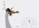

پذيرش > تریبون > گزارش كمپين > در شرایطی که کم مانده نفس کشیدن نیز ممنوع شود، ما جمع شدیم


 در شرایطی که کم مانده نفس کشیدن نیز ممنوع شود، ما جمع شدیم در شرایطی که کم مانده نفس کشیدن نیز ممنوع شود، ما جمع شدیم
23 اسفند 1390 - - نسخه قابل چاپ
تغییر برای برابری - جنبش زنان در رشت همچون شهرهای دیگر ایران مراسم 8 مارس را گرامی داشتند. علاوه بر انتشار و پخش بروشور به مناسبت 8 مارس، نشستی برگزار کردند.
گزارشی از رزیتا رجایی، رشت
روزهای سختی را سپری میکنیم، روزهایی که روز به روز خفقان و تاریکی بیشتری به سراغمان میآید با این همه اما، فعالین حقوق زن رنگ نباختهاند و همچنان به فعالیت خودشان ادامه میدهند و از هر فضایی که ایجاد میشود نهایت استفاده را میکنند تا نشان دهند که جنبش نمرده است. و این میتواند جوابی باشد به تمامی کسانی که مدعی میشوند جنبش در ایران از بین رفته. در شرایطی که کم مانده نفس کشیدن نیز ممنوع شود، ما جمع شدیم، همه با هم حرکت کردیم، یکدست شدیم، فریاد کشیدیم و با هم این روز را جشن گرفتیم. روزی که اگرچه برایمان شادترین روزها بود اما در دل هرکداممان غمی نهفته بود. غمی که زنان و مردان سرزمین من با آن دست و پنجه نرم میکنند. که کاش میشد توی خیابانهای شهرمان جشن بگیریم، که کاش میتوانستیم به مردان شهرمان شیرینی تعارف کنیم که بهشان بگوییم دوستشان داریم و اگر این نردهها نبودند، حالا رو بهروی هم نبودیم و در کنار هم، دست در دست هم، این روز را جشن میگرفتیم.
رشت
و اما رشت، نامش که میآید به کوچکی شهرش فکر میکنی و به سبزی رنگ چمن و مردمی که یاد گرفتهاند دوست داشته باشند و سبز باشند.
اینبار هم رشت مثل همیشه سبز بود. مثل همیشه سبز از فعالینی که با جان و دل زحمت میکشند تا به این سبزی دامن بزنند. 18 اسفند، مصادف با 8 مارس، روز جهانی زن، روزی که برای تکتکمان به یاد ماندنی بود جمعی از فعالین رشت برنامهای ترتیب دادند.
تعداد حاضران در مراسم آنقدر زیاد بود و همگونی آدمها آنقدر زیاد، که اشک شادیمان راه افتاد؛ که ایمانمان را بیشتر و بیشتر کرد که تلاشمان نتیجهبخش بود و این را میشد از لبخند آدمهایی که جمع ما را انتخاب کردند فهمید.
گرامی داشت 8 مارس راس ساعت 9 و نیم صبح آغاز با خواندن تاریخچهی 8 مارس آغاز شد، سپس یکی از فعالین گزارشی از فعالیتهای سالهای اخیر فعالان رشت ارائه داد و برای دوستان خواند. در ادامه سرپرست برنامه پس از تبریک 8 مارس و گرامیداشتن این روز، و ارزشمند شناختن آن، اینکه در این شرایط سخت بیش از 90 نفر دور هم جمع شدهاند را ارزشمند تلقی کرد. از آماده کردن بروشورها گفت و به زحمات فعالین در جهت تهیه و تدوین بروشورها اشاره کرد. وی سپس برنامههای روز را از قبیل: آواز، سرود، بازی و بحث، و مراسم جشن 8 مارس را اعلام کرد
پس از آن به یادزنده یاد اباذر غلامی شاعر خوب و مردمی گیلان که به تازگی در گذشته اند، شعری خوانده شد. همچنین یکی از دوستان اباذر غلامی چند جملهای از خصوصیات آن مرحوم گفت و همه به احترام آن مرحوم یک دقیقه سکوت کردند.
در ادامهی برنامه یکی از مادران عزادار که فرزندش در حوادث پس از انتخابات کشته شد چند جملهای دربارهی فرزند از دست رفته و خصوصیات اخلاقی وی صحبت کرد.
گریه امان نداد که حرفهای این مادر بیش از چند جمله ادامه پیدا کند و وی در حالی که عکس فرزندش توی دستش بود ساکت شد. چشمهای مادران خیس و چهرهي جوانها و مردهایی که شاید لحظهای هم نمیتوانستند خودشان را جای این مادر بگذارند غمگین بود. مادر اما لبخندی به لب داشت که البته نمیتوانست غمش را پنهان کند. مرغ سحری خوانده شد و بعد... ..
صدای دلنشین موسیقی «شمس شمسی» خوانندهی قدیمی ایران، موسیقی متنی دلنشین ایجاد کرده بود و سیدی شمس در بین محصولاتی که برای فروش مهیا شده بود قرار داشت. شمس که میخواند همه زیر لب با او همصدا میشدند.
نوبت به بحث رسیده بود. بحثی که همیشه برای اعضا از اهمیت بالایی برخوردار است و بزرگترین امتیاز این بود که کسانی را ترغیب به حرف زدن میکردیم که شاید بنا به دلایلی هیچ وقت در جمع صحبت نمیکردند اما حالا کنار ما، احساس یکدلی میکردند و حرف میزدند، از تجربیات شخصیشان شروع میکردند و همین باب صحبتشان میشد. در ابتدا افراد حاضر به 4 گروه، با ردههای سنی و تفکرهای متفاوت تقسیم شدند. هر کدام از فعالین سرپرستی یک گروه را به عهده گرفتند، که بحث از مسیر اصلی خارج نشود. موضوع بحث هر گروه متفاوت از گروه دیگر بود اما همهشان با محوریت حق مالکیت تن انتخاب شده بودند.
بعد از یک ساعت، هر گروه نمایندهای برای حرف زدن فرستاد و نماینده برآیند حرفهای زده شده در گروهش را انتقال داد و سپس نوبت به پرسش و پاسخ دوستان رسید و بحث داغی سر گرفت. طولی نکشید که یخها شکسته شد و همه میخواستند حرف بزنند که جلسه با سرپرستی خوب یکی از فعالین و هدایت درستش به بیراهه کشیده نشد.در خلال بحث یکی از گروهها از نمایش کوتاهی برای رساندن آنچه مدنظرشان بود استفاده کرد.
معضلات جامعه از زبان بچهها یکییکی بیان میشد و تفاوت نسلها و اختلاف نظرها، فضا را برای بحثی قوی ایجاد کرده بود.
بعد از بحث، مستندی کوتاه در بارهی زندگی قمر پخش شد و سپس آوازی خوانده شد و کیکی که برای 8 مارس تدارک دیده شده بود را همراه با خوانش سرود همراه شو عزیز، آورده و شمع تولد روز جهانی زن فوت شد.
باشد که روزی همه آزاد در شهرهایمان، توی خیابانهایمان جشن بگیریم. باشد که سبز بمانیم. مثل شهرمان رشت.
برشور 8 مارس

ارسال به
بالاترین
،
توییتر
،
فریندفید
،
فیسبوک
در همين بخش :
 دهمین دورۀ مراسم تندیس صدیقه دولت آبادی ۱۳۹۲ دهمین دورۀ مراسم تندیس صدیقه دولت آبادی ۱۳۹۲
کارت پستالهایی به بهانهی هشت مارس و به یاد همهی مبارزین راه برابری
بیانیه بیش از 350 تن از مدافعان حقوق زنان به مناسبت روز جهانی زن؛ زنان هر روز فرودستتر میشوند
لباسی که برای تن ما دوخته اند! /اعظم بهرامی
چالشها و چشمانداز فعالیت مدنی زنان
ديگر بخش ها :
طرح یک میلیون امضا
|
مقالات
|
سایت نوشته ها
|
اخبار
|
گزارش كمپين
|
گفت و گو
|
علیه سکوت
|
كوچه به كوچه
|
نامه های شما
|
گزارش ویژه
|
گفتگو با اعضا
|
ویژه سالگرد کمپین
|
تصویر برابری
|
دل آرام علی
|
تریبون
|
مقالات
|
تاریخ شفاهی
|
خارج از چارچوب
|
کتابخانه
|
درباره کمپین
|
کمپین در شهرها
|
کمپین در بند
|
صدای تغییر
|
ویژه 22 خرداد
|
لایحه حمایت از خانواده
|
گالری
|
عشا مومنی
|
امیر یعقوبعلی
|
خدیجه مقدم
|
راحله عسگری زاده و نسیم خسروی
|
پروین اردلان،جلوه جواهری، مریم حسین خواه، ناهید کشاورز
|
زینب پیغمبرزاده
|
سعیده امین، سارا ایمانیان، محبوبه حسین زاده، ناهید کشاورز و همایون نامی
|
احترام شادفر
|
نسیم سرابندی زاده،فاطمه دهدشتی
|
وبلاگ مهمان
|
پرونده خرم آباد
|
دستگیری ها
|
مریم مالک
|
پرستو اللهیاری
|
مهرنوش اعتمادی
|
سمیه رشیدی
|
Other Languages
|
همراهان
|
«فراخوان کمپین ده روز با بهاره هدایت»
| English
|